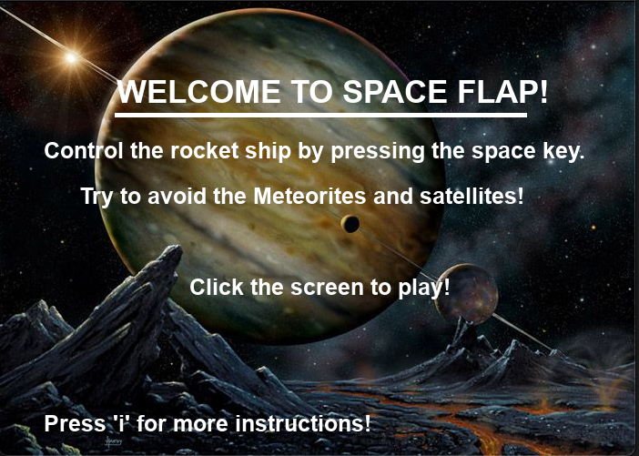
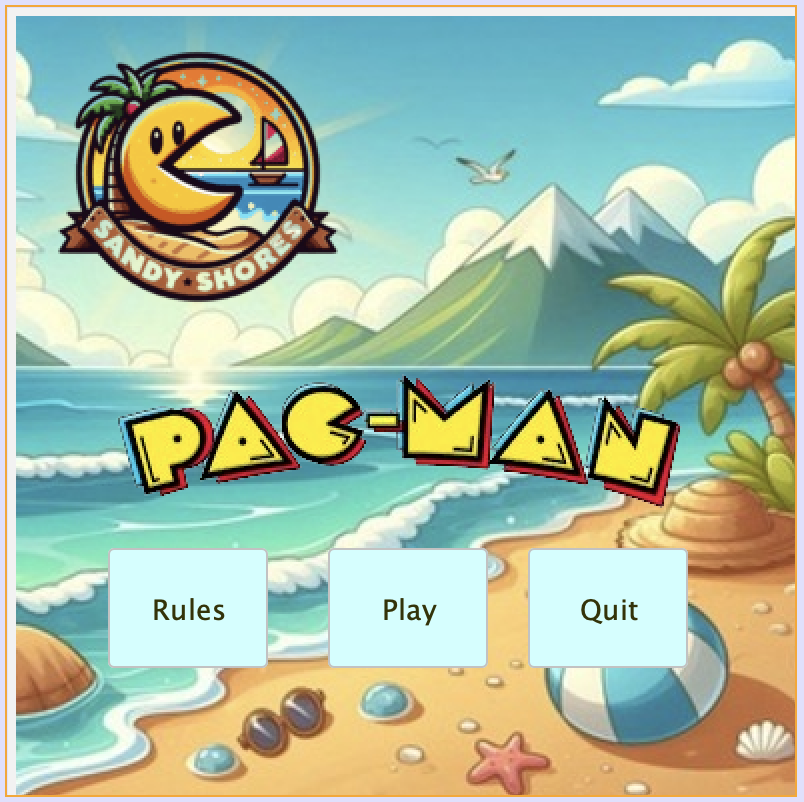
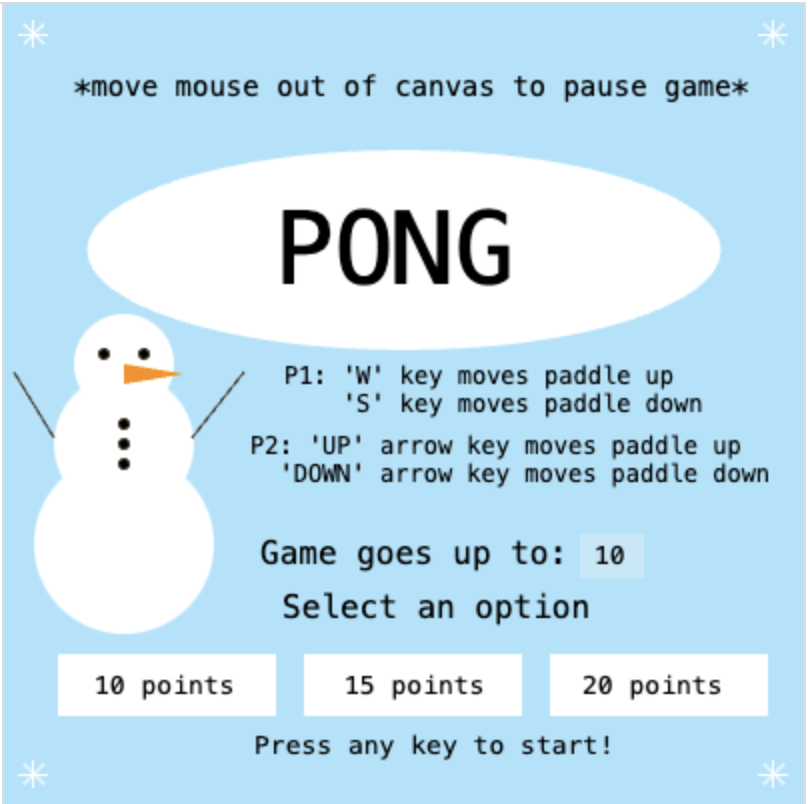

Space Flap
A space themed jumping game inspired by flappy bird. The player starts with 3 lives and controls an UFO through space while trying to dodge obstacles like meteors and satellites to stay alive. There are coins scattered throughout the game to add an extra challenge to increase the player's high score. An image of the start page of the game is to the right.
Technologies Used: Python, Pygame 
Features & Challenges:
- Variety of Obstacles: Players encounter a variety of obstacles including meteors and satellites that vary in speed and size, which requires the player to have strategic timing.
- Life System: Players start with three lives and lose a life if they come in contact with any obstacles, requiring the player to be strategic with their controls.
- Scoring System: When players collect coins their score increases which keeps the gameplay competitive and engaging.
- Speed Changes: As the player's score increases, the speed of the UFO changes, keeping the player on their toes.
Pac-Man: Sandy Shores
A twist on the classic Pac-Man game set on the beach with no ghosts. Players race against the timer to collect as many seashells as possible. The player only has 3 lives which are lost if Pac-Man hits any border of the maze. An image of the start page of the game is to the right.
Technologies Used: Java 
Features & Challenges:
- Music: Integrated background music enhances the player's immersion in the game.
- Life System: Players start with three lives and lose a life if they come in contact with a border, requiring the player to be strategic with their controls.
- Time Limit: The player has a 30 second timer to collect as many seashells as possible assuming they have not lost all their lives before the end of the timer, creating a sense of urgency.
- Scoring System: Each seashell is worth a randomly assigned value between 5 and 50 points which will add to their score, keeping the gameplay competitive and engaging. When all seashells on the board are collected, they will regenerate.
Winter Pong
A minimalistic winter-themed version of the classic two-player game Pong. Each player controls a paddle which they use to hit the ball back and forth, aiming to score points by getting the ball past the opponent's paddle. An image of the start page of the game is to the right.
Technologies Used: JavaScript 
Features & Challenges:
- Customizable Game Settings: Before the game starts, the players can choose how many points they want to play up to. This allows for a customizable game length based on their preferences.
- Speed Changes: The speed of the ball changes every time it is hit by a paddle, which keeps the players on their toes.
- Scoring System: Players score one point when they get the ball past the opponents paddle. The game ends when one of the players reaches the set goal point.